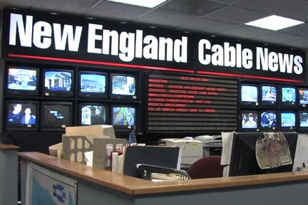

Getting off the Ground
NECN emerged as part of what the Columbia Journalism Review (CJR) called “a journalistic movement burgeoning across the country.” [2] In the 1980s and 1990s, local and regional all-news channels sprung up in most major markets. By 1993, there were enough of them to form their own association, the Association of Regional News Channels (ARNC). “The newcomers,” said a 1998 article in the Boston Globe , “are mushrooming into a force that is changing the dynamics of local TV news. Whether it’s spot news, ongoing live coverage of a major event, or a coveted interview with a prominent newsmaker, cable channels pose a serious and growing challenge to the long-held dominance of broadcast stations.” [3]
By 1998, there were almost 30 local cable news stations nationwide, reaching roughly 23 million viewers. Some stations covered and served large cities: New York, Chicago, Washington DC, and San Francisco. Others focused on regions: the Pacific Northwest, Orange County and, beginning in 1992, New England.
 NECN launch . NECN launched on March 2, 1992, a $10 million joint venture of Continental Cablevision (later part of Comcast) and the Hearst Corporation. At its inception it employed 90 people and reached some 650,000 homes. The channel was the brainchild of Philip S. Balboni, former vice president and news director of Channel 5 (WCVB-TV), the ABC Boston affiliate. Immediately prior to creating NECN, he was special assistant for new projects to the CEO of the Hearst Corporation—a position that helped him to negotiate the deal between Hearst and Continental.
Balboni conceptualized NECN, drew up its business plan, and made the key hires. Charles Kravetz , the assistant news director under Balboni at Channel 5, became NECN’s news director. Balboni and Kravetz had helped Channel 5 to become both highly rated and respected, and they had lofty goals for NECN. Local news channels, Balboni told CJR, aim to be “the highest quality source of news on television.” [4] The premise of the undertaking was that good TV journalism could be profitable. “There’s a strong appetite for quality local news,” Balboni said.
NECN started at a relatively low cost, relying on young, largely unknown on-air talent, non-union labor, and new technology. NECN used roboticized cameras, for example, allowing it to produce newscasts with four technicians, rather than the 12 to 14 required by traditional newscasts. Yet NECN didn’t impress critics at the outset. “Stories rarely lasted longer than those on standard newscasts,” the Boston Globe wrote in March 1992.
Each-half hour is predictably a carbon copy of the one that preceded it. The reporters and crew seem to be the equivalent of a Triple-A farm club, waiting for the call to the majors. [5]
The Globe praised the morning anchors and the in-depth coverage of basketball star Magic Johnson’s appearance at a high school, where he spoke about AIDS. But “except for the Johnson coverage, there wasn’t any sense of city or region,” it noted. [6] A Boston Herald piece two months after the launch said, “The channel has not broken a story of note. Instead, NECN concentrates on going ‘live’ with easy, stagy news events, such as ceremonies and speeches.” [7] In its early months, NECN ran Channel 5 news telecasts which, the Herald said, created an unflattering contrast: “Compared to NECN, NewsCenter 5 never looked so good.”
But Balboni knew that problems were inevitable, and that a news channel didn’t emerge fully formed. NECN, much anticipated and closely watched, didn’t have the luxury of making its mistakes in obscurity. “People forget what CNN was like when it first went on the air,” Jim Thistle of Boston University told the New York Times . “They had some really rocky moments and now people talk about them in hallowed tones. I think NECN started with far fewer problems than CNN did.” [8]
Footnotes
[2] David Lieberman, “The Rise and Rise of 24-Hour Local News,” Columbia Journalism Review , November/December 1998, p. 54.
[3] Don Aucoin, “Cable’s News-Comers: Regional News Operations Challenging Broadcasters, Changing Viewers Habits,” Boston Globe , January 4, 1998, p. N1.
[4] David Lieberman, “The Rise and Rise of 24-Hour Local News.”
[5] Ed Siegel, “Magic Saves NECN’s Debut on Cable,” Boston Globe , March 3, 1992, p. 27.
[6] Ed Siegel, “Magic Saves NECN’s Debut on Cable.”
[7] “N.E. Cable News Misses Its Calling: Repeated Stories Replace Enterprise Reporting,” Boston Herald , June 3, 1992, p. 57.
[8] Glenn Rifkin, “A News Niche Grows in New England,” New York Times , April 26, 1993, p. D1.